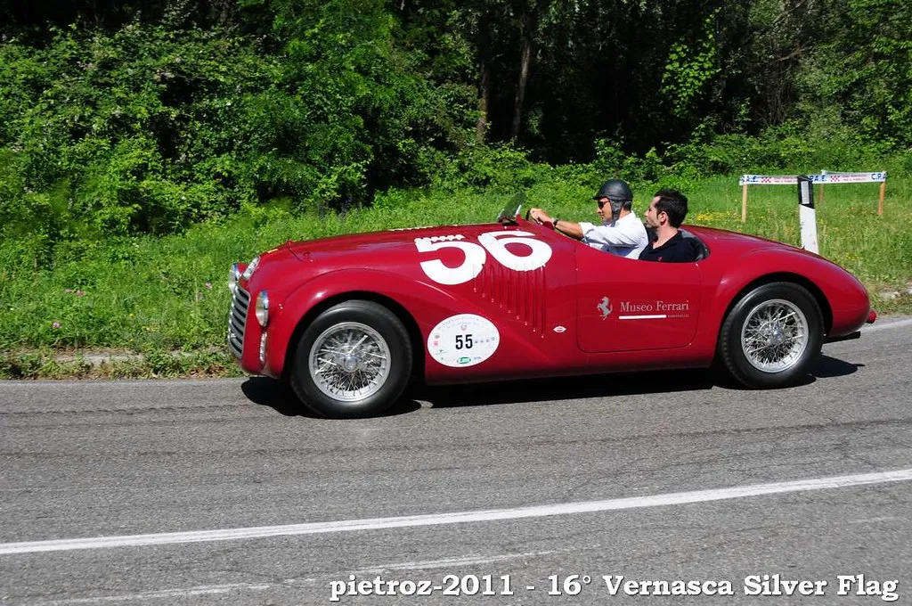

Ferrari
- Geschichte: Enzo Ferrari (Leiter vom Scuderia Ferrari Rennteam) begann 1947 Autos bauen
- Sceduria Ferrari (erfolgreichstes F1-Team): 1929-1938 unter Leitung von Enzo Ferrari, benutzten seit damals das heutige Logo
- gegründet: 1947
- Hauptsitz: Maranello (Italien), Amsterdam (Niederlande)
- Gründer: Enzo Ferrari (Rennfahrer)
- Logo: Logo enstand 1 Welt Krieg (Pferd war auf Kampfflugzeug gemalen) (Francesco Baracca)


Ferrari 125 S
- Besonderheit: erster Ferrari
- Rennen: 13 Rennen teil (6 gewonnen)
- Entwickler: Gioacchino Colombo und Luigi Bazzi (V12)
- Hubraum: 1497cm³
- Leistung: 118 PS
- Max. Gechwindigkeit: 210km/h
- Leergewicht: 650kg
- Tankinhalt: 72 Liter